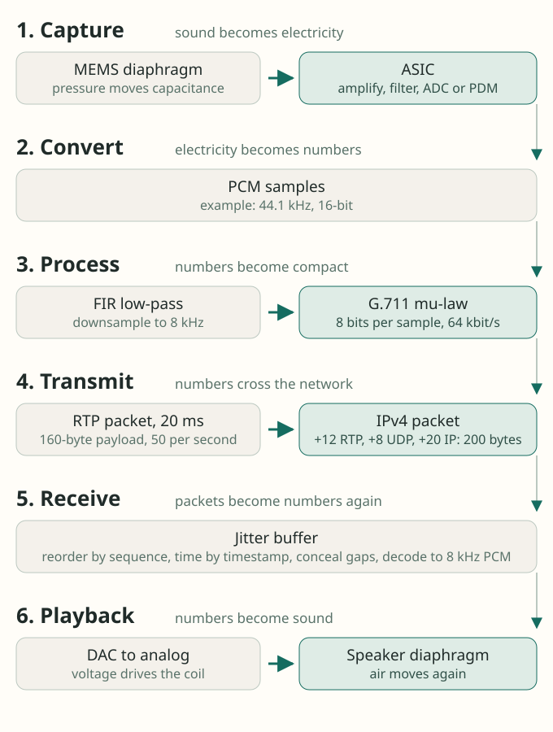

from air to packets and back: an IDSW talk, checked
Talk reading, 21 Nov 2026. Session: From Air to Packets and Back: How Voice Travels Between Devices, IDSW 2026, 14:55-15:25 on 21 Nov, listed speaker Yoseph Bernandus (Software Engineer at RevComm Inc) on the official agenda. This note is based on two photographed slides shared with us. The photos are not reproduced here. Every number on the example path was checked on 21 Nov 2026 against the standards it comes from.
The talk's arc: a voice call is a relay race of conversions. Air pressure becomes an electrical signal, the signal becomes numbers, the numbers are squeezed into packets, the packets cross a network, and the other end plays the whole sequence in reverse. The slide follows one concrete example, a G.711 call, and says plainly that it is an illustration rather than the exact stack every device uses. That framing is accurate, and the arithmetic on the slide checks out.

Original explanatory diagram based on the talk's six stages and the cited standards, not a slide reproduction.
The numbers, checked
| Slide example | Check against the standards | Reading |
|---|
| PCM at 44.1 kHz, 16-bit | A standard consumer audio rate (the compact disc rate), listed among common sampling frequencies in RFC 3551. A reasonable stand-in for raw capture quality; many phones actually capture at 48 kHz. | Fine as an example. |
| G.711 mu-law: 8 kHz, 8 bits per sample | Confirmed. ITU-T G.711 is "Pulse code modulation of voice frequencies". RFC 3551 carries it as PCMA and PCMU: sample-based, 8-bit samples, 8,000 Hz clock. That is 8,000 one-byte samples per second, exactly 64 kbit/s. | Confirmed. |
| 20 ms of audio in one packet: 160-byte payload | Arithmetic holds: 8,000 samples per second x 0.020 s = 160 samples, one byte each. RFC 3551 section 4.2 makes 20 ms the default packetization interval for exactly this reason: it sets the minimum end-to-end delay. | Confirmed. |
| 172 bytes with header | Confirmed at the RTP layer: RFC 3550 section 5.1 states the first twelve octets are present in every RTP packet, so 160 + 12 = 172. The packet grows again below that: add the 8-byte UDP header and 20-byte IPv4 header and one packet is 200 bytes as a minimal IPv4 packet, before link-layer framing, optional headers or any VPN/encryption overhead. So 40 bytes of every 200 carry no voice: 80 kbit/s of IP traffic for 64 kbit/s of speech. | Confirmed, with the minimal IPv4 packet size added. |
| Jitter buffer: ordering, timing, concealment | Confirmed. RFC 3550 gives every packet a 16-bit sequence number that increments per packet (that is what reordering and loss detection use) and a 32-bit timestamp marking the sampling instant (that is what playout timing uses). Concealing a missing packet, for example replaying or interpolating audio, is a receiver implementation choice on top of those fields. | Confirmed. |
| MEMS microphone: diaphragm, capacitance, ASIC, ADC/PDM | Confirmed with real variety. A MEMS membrane vibrates with sound and its capacitance against a fixed plate changes; a separate ASIC in the same package does the amplification. What leaves the package varies: some microphones output analog directly, most digital ones use delta-sigma conversion producing a 1-bit PDM stream, and some output I2S words instead. Piezoelectric elements are an emerging alternative to capacitive sensing. | Confirmed; ADC and PDM are alternatives, not a fixed sequence. |
The codec step, checked arithmetic
A second slide from the same talk, "Why encode audio differently?" (labeled VOICE LAB / 06 / CODECS), isolates the codec step itself. Its point: G.711 mu-law maps each linear 16-bit sample to an 8-bit code at the same sample rate. No samples are dropped in this step; each one just gets smaller, and decoding gives back an approximation, not the original. The slide shows the original and decoded waveforms side by side with playback buttons for each.
The slide's worked example takes three consecutive 16-bit samples and traces them through encode and decode. Every figure on it can be reproduced exactly with the ITU G.711 reference mu-law algorithm, and we did:
| PCM input (16-bit) | G.711 mu-law code (8-bit) | Decoded PCM (16-bit) |
|---|
| -7205 | 0x23 | -7164 |
| -7293 | 0x22 | -7420 |
| 1618 | 0xC4 | 1628 |
All three codes and all three decoded values match the slide to the unit. So three samples that took 6 bytes as PCM travel as 3 bytes and come back as 6 bytes again, with values close to but not identical to the originals: the encoding is lossy, deliberately. Mu-law spends its 256 codes unevenly, finely near silence and coarsely at loud amplitudes, which matches how the ear notices error; on these samples the absolute error is 41, 127 and 10 out of a 32768 range.
Two different reductions are easy to confuse here, and the talk keeps them separate. Downsampling (44.1 kHz to 8 kHz in the process stage) reduces the number of samples. Companding (16-bit to 8-bit mu-law, this slide) reduces the size of each sample at whatever rate is left. Together they take the example stream from 705.6 kbit/s to 64 kbit/s, an 11-fold reduction, before a single packet is sent.
One example, not every call
The slide's own footnote says this is an illustrative G.711 path, not the exact stack every device uses, and the standards back the footnote:
- G.711 itself has two flavors. mu-law (PCMU) and A-law (PCMA) are both in the RTP profile; they compress the same 16-bit range into 8 bits with different curves.
- Many modern calls use different codecs. Opus (RFC 6716) is the usual choice in browser and app calls, and mobile networks use their own voice codecs (AMR, EVS). The pipeline shape stays; the numbers change.
- Packet size is a dial. RFC 3551 notes the trade directly: longer packets mean less header overhead but more delay, and each lost packet hides more speech. 20 ms is the default, not a law.
- Microphones differ. Analog-output, PDM and I2S MEMS parts all exist, so "ADC then PDM" is one arrangement, not a universal chain.
The speaker's references
The talk's closing slide lists its own references. Each destination below was opened and checked on 21 Nov 2026; all resolve. The reference photo itself is not reproduced.
Sources checked 21 Nov 2026